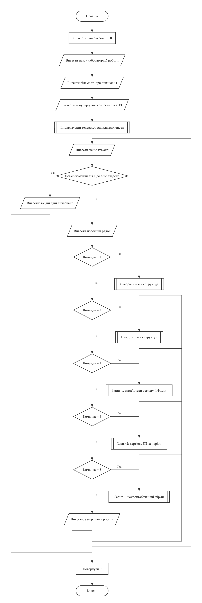
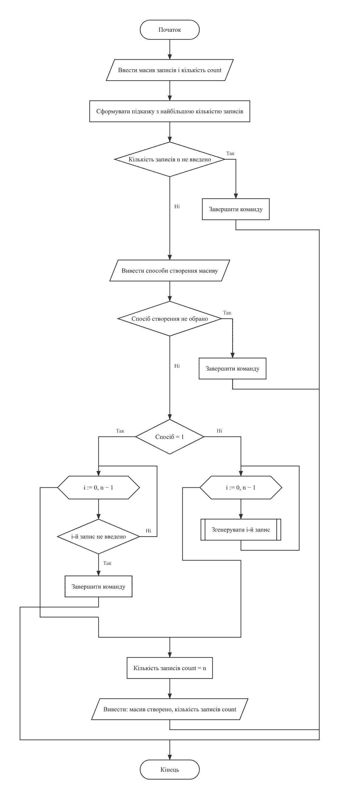
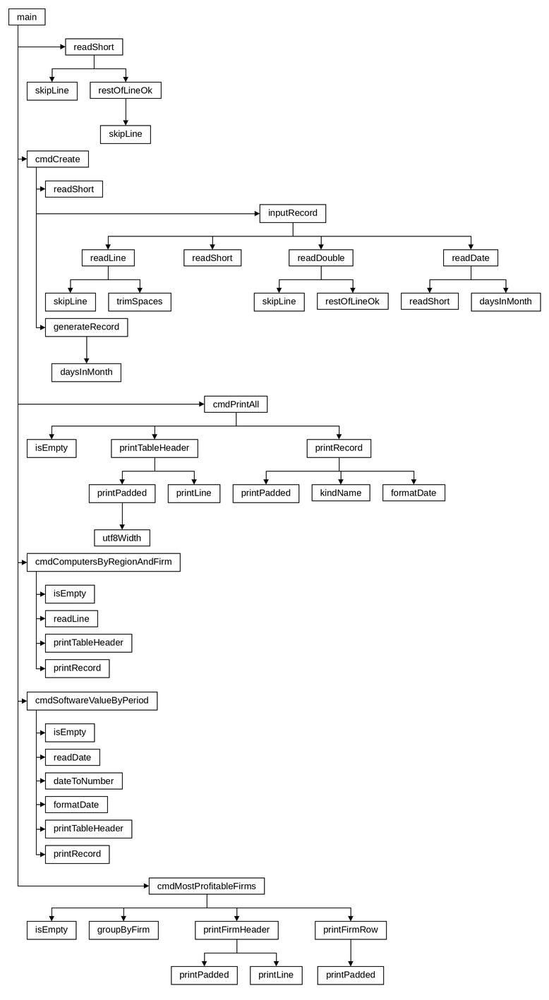

LAB10(19)Основи програмуванняLAB10(19)
Лабораторна робота №10
Структури та масиви структур
Варіант 19. Виконав: Одарчук Олексій, КНУ імені Тараса Шевченка, Факультет інформаційних технологій, Кафедра програмних систем і технологій, група ІПЗ-11. C17, gcc
- 1 завдання
- C
- 8 розділів
01Мета роботи#
- Ознайомитися зі структурним типом даних, оголошенням структурної змінної та масиву структур.
- Опанувати доступ до елементів структури та передачу структур у функції.
- Навчитися розробляти програми обробки масивів структур із реалізацією запитів.
02Умова задачі#
Створити масив структур. Кожна структура складається з таких елементів: назва фірми, продукт, що продається - комп'ютери і програмне забезпечення, регіон збуту, вартість продажу, термін постачання. Реалізувати запити, визначивши:
- список комп'ютерів, що продаються у заданому регіоні конкретною фірмою;
- вартість проданого програмного забезпечення у задані терміни;
- найрентабельніші фірми (з найбільшою вартістю продажів).
Результати запитів вивести у вигляді таблиць.
Обов'язкові вимоги до виконання#
Невиконання пунктів 1-6 неприпустимо і призводить до штрафних санкцій у 50% зниження балів:
- меню команд, виконання яких здійснювати через виклики функцій;
- кожна функція визначає окрему обмежену дію відповідно до сценарію програми;
- застосування покажчиків на масив структур та окремі структури схвалюється;
- створення масиву через введення з клавіатури або генерацію псевдовипадкових даних;
- створений масив обов'язково вивести на екран у табличній формі із заголовком, що відповідає переліку полів з умови;
- пошук здійснювати, задаючи ключі пошуку з клавіатури;
- результати запитів виводити в табличній формі, заголовок таблиці виводиться один раз.
Обмеження умови: забороняється використовувати STL для колекцій - класи
vector, list, map, set,
string, ітератори, контейнери. Дозволено функції заголовних файлів
string.h, ctype.h, stdlib.h.
03Аналіз задачі та теоретичне обґрунтування#
Проєктування структури даних#
Вид продукту подано переліковим типом ProductKind (комп'ютери або
ПЗ), а не рядком, тож запит "список комп'ютерів" не залежить від того, як користувач
написав назву. Назва моделі зберігається окремим полем product.
Термін постачання подано вкладеною структурою Date (день, місяць,
рік). Найбільший день, який можна ввести, залежить від місяця й року (функція
daysInMonth() враховує високосні роки), тож неіснуючу дату на кшталт 31.02
ввести неможливо. Поля дати мають тип short. Рік обмежено діапазоном
1..9999, тому число виду РРРРММДД не перевищує 99 991 231 і вміщується в
int, але не в short. Для порівняння дату зведено до числа виду
РРРРММДД:
dateToNumber(d) = d.year·10000 + d.month·100 + d.day
Порядок таких чисел збігається з хронологічним, тож дати порівнюються звичайними операціями відношення.
Виконання обов'язкових вимог#
| Вимога | Реалізація |
|---|---|
| 1-2. Меню та поділ на функції |
Кожен пункт меню виконує окрема функція cmdCreate(),
cmdPrintAll(), cmdComputersByRegionAndFirm(),
cmdSoftwareValueByPeriod(), cmdMostProfitableFirms().
Масив структур оголошено в головній функції і передано кожній команді через
покажчик Sale *sales разом із кількістю записів; головна функція
лише відображає меню й викликає потрібну команду - жодної обробки даних у ній
немає.
|
| 3. Покажчики на структури |
Масив структур передається у функції через покажчик на перший елемент (const Sale *sales), а cmdCreate() заповнює його через покажчик і повертає кількість
записів через вихідний параметр short *count. Функція
groupByFirm() будує новий масив структур FirmTotal у
переданому через покажчик буфері й повертає кількість його елементів. Окремі
структури теж передаються покажчиком: printRecord(),
inputRecord(), generateRecord(),
dateToNumber(), printFirmRow(). У циклах запитів
поточний запис адресується як const Sale *const sale = sales + i:
це уникає копіювання структури, а модифікатор const документує, що
запис не змінюється.
|
| 4. Два способи створення | Введення з клавіатури або генерація псевдовипадкових даних із наборів реалістичних назв фірм, регіонів, моделей комп'ютерів і назв програм. |
| 5. Таблична форма із заголовком |
Заголовок printTableHeader() повторює перелік полів з умови: Назва
фірми, Продукт, Вид, Регіон збуту, Вартість продажу, Термін постачання.
|
| 6. Ключі пошуку з клавіатури | Регіон і назва фірми для запиту 1, межі періоду для запиту 2 вводяться користувачем. |
| 7. Заголовок один раз |
Заголовок таблиці результатів виводиться перед першим знайденим записом
(умова if (found == 0)), а не перед кожним. Якщо записів не
знайдено, таблиця не виводиться взагалі - натомість виводиться повідомлення.
|
Запит 3: найрентабельніші фірми#
Записи групуються за назвою фірми функцією groupByFirm(), яка заповнює
масив структур FirmTotal (назва, кількість продажів, сумарна вартість) і
повертає кількість різних фірм. Далі знаходиться найбільша сума, і виводяться
усі фірми з цією сумою: за рівних сум їх може бути кілька. Суми накопичуються в
типі double, тому порівнюються з допуском у половину копійки (PRICE_TOLERANCE = 0.005): дві математично рівні суми, накопичені в різному порядку, можуть відрізнятися
похибкою округлення.
Перед відповіддю виводиться таблиця сум по всіх фірмах, з якої видно, як отримано максимум.
Вирівнювання таблиць#
Специфікатор %-16s рахує байти, а кирилична літера в UTF-8 займає два
байти, тому для вирівнювання таблиць використано функцію printPadded(), що
рахує ширину в символах.
Вибір типів даних#
Програма використовує стільки пам'яті, скільки їй реально треба: для кожної змінної взято найменший тип, у який гарантовано вміщується її діапазон.
| Змінні | Тип | Чому |
|---|---|---|
Поля дати day, month, year |
short |
День 1..31, місяць 1..12, рік 1..9999 - усе в межах 16 біт. |
Кількість записів, індекси, лічильники знайдених записів,
FirmTotal.sales, пункти меню, номер виду продукту під час введення,
ширини стовпців
|
short |
Не перевищують MAX_RECORDS = 200 або ширини таблиці. Введення читає
readShort().
|
Вартість Sale.price, суми total,
FirmTotal.total, maxTotal,
PRICE_TOLERANCE
|
double |
Вартість вводиться з копійками без верхньої межі. У float близько 7
значущих цифр, тож уже суми понад 100 000 грн втрачають копійки, а похибки
накопичуються в підсумках.
|
Число дати РРРРММДД (dateToNumber()) |
int |
Досягає 99 991 231, а short вміщує лише до 32 767. |
Проміжне число в readShort() |
int |
scanf("%d") у short обрізало б значення поза
діапазоном (65537 стало б 1), і хибне введення пройшло б перевірку.
|
Результат getchar(), результат scanf() |
int |
Цього типу вимагають стандартні функції: EOF не є символом. |
Поля Sale розміщено за спаданням вирівнювання: double price,
ProductKind kind, Date delivery з полів short,
масиви символів. Так між полями немає байтів-заповнювачів.
Література: Ковалюк Т.В. Алгоритмізація та програмування. - Львів.: "Магнолія 2006", 2024. - 400 с.; Deitel P., Deitel H. C++ How to Program. Pearson Education, Inc. Hoboken, New Jersey. 2017. - 3015 p.
04Блок-схема алгоритму#




HIPO-діаграма показує ієрархію викликів функцій так само, як у лекції 5: зверху головна функція main, від неї стрілки ведуть до функцій, які вона викликає, нижче - функції, що викликаються з них; петля біля блока означає рекурсивний виклик. Функцію, яку викликають з кількох місць, розгорнуто лише там, де вона трапляється вперше, а довгі переліки викликів подано стовпчиком, щоб схема вміщувалася на сторінку. Діаграму побудовано за текстом програми.

Схеми побудовано за текстами програм у rombik (rombik.app) відповідно до ДСТУ 19.701-90 (ISO 5807). Структура кожної схеми точно відповідає коду функції, а блоки описують дії словами, як у методичних вказівках, без фрагментів коду.
05Текст програми#
task1.c
/*==============================================================================
task1.c. Лабораторна робота №10. Варіант 19.
Тема: структури та масиви структур.
Умова (варіант 19): створити масив структур. Кожна структура складається
з таких елементів: назва фірми, продукт, що продається - комп'ютери
і програмне забезпечення, регіон збуту, вартість продажу, термін постачання.
Реалізувати запити, визначивши:
- список комп'ютерів, що продаються у заданому регіоні конкретною фірмою;
- вартість проданого програмного забезпечення у задані терміни;
- найрентабельніші фірми (з найбільшою вартістю продажів).
Результати запитів вивести у вигляді таблиць.
ОБОВ'ЯЗКОВІ ВИМОГИ ДО ВИКОНАННЯ (невиконання пунктів 1-6 - штраф 50%):
1. Програма повинна мати меню команд, виконання яких здійснювати через
виклики функцій.
2. Кожна функція має визначати окрему обмежену дію відповідно до сценарію
програми: створення масиву структур, виведення масиву структур, пошук
і виведення результатів запитів.
3. Застосування покажчиків на масив структур та окремі структури
схвалюється.
4. Створення масиву структур здійснювати через введення з клавіатури або
генерацію рядків і чисел за допомогою генератора псевдовипадкових чисел.
5. Створений масив структур обов'язково вивести на екран у табличній формі.
Заголовок таблиці має відповідати заданому в умові переліку полів.
6. Виконання пошуку по масиву структур здійснювати, задаючи ключі пошуку
з клавіатури.
7. Виведення результатів запитів здійснювати в табличній формі. Заголовок
таблиці виводиться один раз, далі виводяться дані результату пошуку.
ОБМЕЖЕННЯ УМОВИ: забороняється використовувати STL для колекцій: класи
vector, list, map, set, string, ітератори, контейнери. Дозволено
використовувати функції заголовних файлів string.h, ctype.h, stdlib.h.
Виконав: Одарчук Олексій, КНУ імені Тараса Шевченка, ФІТ, група ІПЗ-11.
Компілятор: gcc -std=c17
==============================================================================*/
#include <stdio.h>
#include <limits.h>
#include <stdbool.h>
#include <string.h>
#include <ctype.h>
#include <stdlib.h>
#include <time.h>
#include <math.h>
/* Обмеження на розміри даних. Межа масиву в мові C має бути сталим виразом
часу компіляції, а змінна з модифікатором const ним не є, тому розміри
задано директивами препроцесора. */
#define MAX_RECORDS 200 //записів у масиві: кількість та індекси - short
#define MAX_NAME 32 //довжина текстового поля
#define MAX_YEAR 9999 //найбільший рік: рік - short, число РРРРММДД - int
/* Допуск при порівнянні сум продажів. Суми накопичуються в типі double,
тож дві математично рівні суми можуть відрізнятися похибкою округлення;
половина копійки - межа, за якою суми вважаються рівними. */
const double PRICE_TOLERANCE = 0.005; //double: порівнюється із сумами типу double
/* Розмір текстового буфера для числа або дати в комірці таблиці. */
enum
{
TEXT_BUFFER = 32
};
/* Ширини стовпців таблиці записів (у символах). */
enum
{
COL_NUMBER = 4,
COL_FIRM = 14,
COL_PRODUCT = 16,
COL_KIND = 12,
COL_REGION = 16,
COL_PRICE = 17,
COL_DATE = 18,
TABLE_WIDTH = COL_NUMBER + COL_FIRM + COL_PRODUCT + COL_KIND + COL_REGION +
COL_PRICE + COL_DATE
};
/* Ширини стовпців таблиці сум продажів по фірмах. */
enum
{
COL_FIRM_NAME = 16,
COL_FIRM_SALES = 12,
COL_FIRM_TOTAL = 20,
FIRM_TABLE_WIDTH = COL_FIRM_NAME + COL_FIRM_SALES + COL_FIRM_TOTAL
};
//==================================== Вид продукту ====================================
/*
Вид продукту. Умова прямо називає два види: комп'ютери та програмне
забезпечення. Переліковий тип замість рядка робить порівняння надійним:
запит "список комп'ютерів" не залежатиме від того, як саме користувач
написав назву виду.
*/
typedef enum
{
KIND_COMPUTER = 0, //комп'ютери
KIND_SOFTWARE = 1 //програмне забезпечення
} ProductKind;
//============================== Date: термін постачання ===============================
/*
Date - термін постачання. Окрема структура, вкладена в основну: це дозволяє
порівнювати терміни як єдине ціле, а не трьома окремими полями.
Усі поля вміщуються в short: день 1..31, місяць 1..12, рік 1..MAX_YEAR.
*/
typedef struct
{
short day; //день постачання (1..31)
short month; //місяць постачання (1..12)
short year; //рік постачання (1..MAX_YEAR)
} Date;
//=============================== Sale: запис про продаж ===============================
/*
Sale - запис про продаж. Поля відповідають переліку з умови варіанта:
firm - назва фірми;
kind - вид продукту (комп'ютери або програмне забезпечення);
product - назва конкретного продукту (моделі);
region - регіон збуту;
price - вартість продажу;
delivery - термін постачання.
Поля розміщено за спаданням вирівнювання (double, переліковий тип, дата
з полів short, масиви символів), щоб між ними не було байтів-заповнювачів.
Вартість має тип double: вона вводиться з копійками без верхньої межі,
а в float (близько 7 значущих цифр) уже суми понад 100 000 грн втрачають
копійки; крім того, похибки float-значень, накопичені за сотні записів,
зсувають копійки в підсумках запитів.
*/
typedef struct
{
double price; //вартість продажу (double: копійки в сумах до мільйонів)
ProductKind kind; //вид продукту
Date delivery; //термін постачання
char firm[MAX_NAME]; //назва фірми
char product[MAX_NAME]; //назва продукту
char region[MAX_NAME]; //регіон збуту
} Sale;
//===================== FirmTotal: підсумок продажів однієї фірми ======================
/*
FirmTotal - підсумок продажів однієї фірми (результат групування записів
для запиту 3):
firm - назва фірми;
sales - кількість продажів (не більше MAX_RECORDS, тому short);
total - сумарна вартість продажів.
*/
typedef struct
{
double total; //сумарна вартість (double: до 200 записів, сума з копійками)
short sales; //кількість продажів (0..MAX_RECORDS)
char firm[MAX_NAME]; //назва фірми
} FirmTotal;
/*==============================================================================
Допоміжні функції
==============================================================================*/
//================= utf8Width: ширина рядка в символах, а не в байтах ==================
/*
utf8Width - ширина рядка в символах, а не в байтах.
Специфікатор формату виду %-18s рахує байти, а в кодуванні UTF-8 кирилична
літера займає два байти, тому таблиці з українськими даними "розповзаються".
Параметри: s [вхідний] - рядок.
Повертає : кількість символів рядка (рядки таблиць коротші за MAX_NAME).
*/
short utf8Width(const char *s)
{
short width = 0; //ширина рядка в символах
//перебрати байти рядка
for (const unsigned char *p = (const unsigned char *)s; *p != '\0'; ++p)
{
/* Продовжувальний байт UTF-8 має вигляд 10xxxxxx: маска 0xC0 лишає
два старші біти, і якщо вони не дорівнюють 10, це початок символу. */
if ((*p & 0xC0) != 0x80) //якщо байт починає символ
{
++width; //збільшити кількість символів
}
}
return width; //повернути ширину рядка
}
//======== printPadded: вивести рядок, доповнивши пропусками до заданої ширини =========
/*
printPadded - вивести рядок, доповнивши пропусками до заданої ширини
в символах.
Параметри:
s [вхідний] - рядок;
width [вхідний] - ширина поля в символах.
*/
void printPadded(const char *s, short width)
{
printf("%s", s); //вивести рядок
for (short i = utf8Width(s); i < width; ++i) //перебрати позиції доповнення
{
putchar(' '); //вивести пропуск
}
}
//==== printLine: вивести горизонтальну лінію таблиці із заданої кількості дефісів =====
/*
printLine - вивести горизонтальну лінію таблиці із заданої кількості дефісів.
Параметри: width [вхідний] - довжина лінії в символах.
*/
void printLine(short width)
{
printf(" "); //вивести відступ лінії
for (short i = 0; i < width; ++i) //перебрати позиції лінії
{
putchar('-'); //вивести дефіс
}
printf("\n"); //завершити рядок
}
//=========================== kindName: назва виду продукту ============================
/*
kindName - назва виду продукту.
Параметри: kind [вхідний] - вид продукту.
Повертає : рядок-константу з назвою.
*/
const char *kindName(ProductKind kind)
{
return kind == KIND_COMPUTER ? "комп'ютери" : "ПЗ"; //повернути назву виду
}
//=========== dateToNumber: звести дату до одного цілого числа виду РРРРММДД ===========
/*
dateToNumber - звести дату до одного цілого числа виду РРРРММДД.
Таке подання дозволяє порівнювати дати звичайними операціями відношення:
хронологічний порядок дат збігається з числовим порядком цих чисел.
Рік не перевищує MAX_YEAR = 9999, тому найбільше таке число 99 991 231
вміщується в int, але не в short (поля дати перед множенням перетворюються
на int).
Параметри: d [вхідний] - покажчик на дату.
Повертає : число виду РРРРММДД.
*/
int dateToNumber(const Date *d)
{
return d->year * 10000 + d->month * 100 + d->day; //повернути число РРРРММДД
}
//============== formatDate: записати дату до рядка у вигляді ДД.ММ.РРРР ===============
/*
formatDate - записати дату до рядка у вигляді ДД.ММ.РРРР.
Параметри:
d [вхідний] - покажчик на дату;
buffer [вихідний] - буфер для рядка;
size [вхідний] - розмір буфера.
*/
void formatDate(const Date *d, char *buffer, size_t size)
{
//записати дату до буфера
snprintf(buffer, size, "%02hd.%02hd.%hd", d->day, d->month, d->year);
}
//======== daysInMonth: кількість днів у місяці з урахуванням високосного року =========
/*
daysInMonth - кількість днів у місяці з урахуванням високосного року.
Параметри: month, year [вхідні] - місяць і рік.
Повертає : кількість днів у місяці (28..31).
*/
short daysInMonth(short month, short year)
{
if (month == 2) //якщо місяць лютий
{
//ознака високосного року
const bool isLeap = (year % 4 == 0 && year % 100 != 0) || year % 400 == 0;
return isLeap ? 29 : 28; //повернути кількість днів лютого
}
//якщо місяць має 30 днів
if (month == 4 || month == 6 || month == 9 || month == 11)
{
return 30; //повернути 30 днів
}
return 31; //повернути 31 день
}
//========= skipLine: відкинути залишок рядка введення разом із символом '\n' ==========
/*
skipLine - відкинути залишок рядка введення разом із символом '\n'.
*/
void skipLine(void)
{
int c = getchar(); //поточний символ введення
while (c != '\n' && c != EOF) //повторювати до кінця рядка
{
c = getchar(); //прочитати наступний символ
}
}
//======= restOfLineOk: перевірити залишок рядка після успішно прочитаного числа =======
/*
restOfLineOk - перевірити залишок рядка після успішно прочитаного числа.
Припустимі лише пропуски до кінця рядка або до наступного числа (тоді
його прочитає наступний виклик); будь-який інший символ - помилка,
і решта рядка відкидається.
Повертає : true - залишок рядка припустимий; false - у рядку сміття.
*/
bool restOfLineOk(void)
{
int c = getchar(); //поточний символ введення
while (c == ' ' || c == '\t' || c == '\r') //пропускати пропуски й табуляції
{
c = getchar(); //прочитати наступний символ
}
if (c == '\n' || c == EOF) //якщо рядок закінчився
{
return true; //повернути ознаку припустимого залишку
}
if (isdigit(c) || c == '-' || c == '+') //якщо далі починається число
{
ungetc(c, stdin); //повернути символ у потік
return true; //повернути ознаку припустимого залишку
}
skipLine(); //відкинути залишок рядка
return false; //повернути ознаку помилки
}
//===== readShort: прочитати ціле число із заданого діапазону з контролем введення =====
/*
readShort - прочитати ціле число із заданого діапазону з контролем введення.
Усі числа, що вводяться в програмі (кількість записів, пункти меню, вид
продукту, день, місяць, рік), мають межі в діапазоні short.
Параметри: prompt [вхідний], value [вихідний], low, high [вхідні].
Повертає : true - число прочитано; false - вхідні дані вичерпано.
Локальні змінні:
number - прочитане число;
scanned - кількість прочитаних чисел.
*/
bool readShort(const char *prompt, short *value, short low, short high)
{
for (;;) //повторювати до коректного введення
{
/* Число читається в int, а не одразу через %hd: %hd мовчки обрізає
значення поза short (65537 стало б 1) і пропустило б хибне введення. */
int number = 0; //прочитане число
printf("%s", prompt); //вивести запрошення
const int scanned = scanf("%d", &number); //кількість прочитаних чисел
if (scanned == EOF) //якщо вхідні дані вичерпано
{
return false; //повернути ознаку кінця даних
}
if (scanned == 0) //якщо введено не число
{
skipLine(); //відкинути хибний рядок
}
//якщо число коректне й у діапазоні
else if (restOfLineOk() && number >= low && number <= high)
{
*value = (short)number; //зберегти число, що вміщується в short
return true; //повернути ознаку успіху
}
//вивести повідомлення про помилку
printf("Помилка: потрібне ціле число від %hd до %hd.\n", low, high);
}
}
//====== readDouble: прочитати дійсне число, не менше за задану межу, з контролем ======
/*
readDouble - прочитати дійсне число, не менше за задану межу, з контролем
введення. Нескінченні значення та NaN відхиляються.
Параметри: prompt [вхідний], value [вихідний], low [вхідний].
Тип double відповідає полю price: вартість вводиться з копійками.
Повертає : true - число прочитано; false - вхідні дані вичерпано.
*/
bool readDouble(const char *prompt, double *value, double low)
{
for (;;) //повторювати до коректного введення
{
printf("%s", prompt); //вивести запрошення
const int scanned = scanf("%lf", value); //кількість прочитаних чисел
if (scanned == EOF) //якщо вхідні дані вичерпано
{
return false; //повернути ознаку кінця даних
}
if (scanned == 0) //якщо введено не число
{
skipLine(); //відкинути хибний рядок
}
//якщо число скінченне й не менше межі
else if (restOfLineOk() && isfinite(*value) && *value >= low)
{
return true; //повернути ознаку успіху
}
//вивести повідомлення про помилку
printf("Помилка: потрібне дійсне число, не менше за %.2f.\n", low);
}
}
//====== trimSpaces: прибрати пропуски на початку й у кінці рядка, щоб випадковий ======
/*
trimSpaces - прибрати пропуски на початку й у кінці рядка, щоб випадковий
пропуск не заважав порівнянню назв під час пошуку.
Параметри: s [вхідний/вихідний] - рядок.
*/
void trimSpaces(char *s)
{
size_t length = strlen(s); //довжина рядка без кінцевих пропусків
//повторювати, доки в кінці пропуск
while (length > 0 && isspace((unsigned char)s[length - 1]))
{
--length; //зменшити довжину рядка
}
s[length] = '\0'; //обрізати кінцеві пропуски
size_t start = 0; //індекс першого непропускного символу
while (isspace((unsigned char)s[start])) //пропустити початкові пропуски
{
++start; //перейти до наступного символу
}
memmove(s, s + start, length - start + 1); //зсунути рядок на початок
}
//======================== readLine: прочитати текстовий рядок =========================
/*
readLine - прочитати текстовий рядок (назву) з клавіатури.
Рядок, що не вміщується в буфер, відкидається цілком і запит повторюється;
порожній рядок (або рядок з одних пропусків) теж не приймається.
Пропуски на початку й у кінці рядка відкидаються.
Параметри:
prompt [вхідний] - текст запрошення;
buffer [вихідний] - буфер для рядка;
size [вхідний] - розмір буфера (MAX_NAME).
Повертає : true - рядок прочитано; false - вхідні дані вичерпано.
Локальні змінні:
length - довжина прочитаного рядка в байтах;
complete - чи прочитано рядок до кінця;
next - символ, що йде після заповненого буфера.
*/
bool readLine(const char *prompt, char *buffer, short size)
{
for (;;) //повторювати до коректного введення
{
printf("%s", prompt); //вивести запрошення
if (fgets(buffer, size, stdin) == NULL) //якщо рядок не прочитано
{
return false; //повернути ознаку кінця даних
}
const size_t length = strlen(buffer); //довжина прочитаного рядка
bool complete = false; //чи прочитано рядок до кінця
if (length > 0 && buffer[length - 1] == '\n') //якщо рядок закінчується '\n'
{
buffer[length - 1] = '\0'; //прибрати символ '\n'
complete = true; //позначити рядок повним
}
else //інакше буфер заповнено повністю
{
/* Буфер заповнено без '\n': рядок або рівно такої довжини,
як буфер (тоді наступний символ - '\n' чи кінець даних),
або задовгий. */
const int next = getchar(); //наступний символ після буфера
complete = (next == '\n' || next == EOF); //визначити, чи рядок повний
}
if (!complete) //якщо рядок задовгий
{
skipLine(); //відкинути залишок рядка
//вивести повідомлення про помилку
printf("Помилка: рядок задовгий. Повторіть.\n");
continue; //повторити введення
}
trimSpaces(buffer); //прибрати крайні пропуски
if (buffer[0] == '\0') //якщо рядок порожній
{
//вивести повідомлення про помилку
printf("Помилка: рядок порожній. Повторіть.\n");
continue; //повторити введення
}
return true; //повернути ознаку успіху
}
}
//============================== readDate: прочитати дату ==============================
/*
readDate - прочитати дату: рік, місяць і день.
Найбільший припустимий день залежить від місяця й року, тому неіснуючу
дату (наприклад, 31.02) ввести неможливо.
Параметри:
indent [вхідний] - відступ перед запрошеннями;
date [вихідний] - покажчик на дату.
Повертає : true - дату прочитано; false - вхідні дані вичерпано.
*/
bool readDate(const char *indent, Date *date)
{
char prompt[64]; //текст запрошення
//сформувати запрошення року
snprintf(prompt, sizeof prompt, "%sрік (1..%d): ", indent, MAX_YEAR);
if (!readShort(prompt, &date->year, 1, MAX_YEAR)) //увести рік
{
return false; //повернути ознаку кінця даних
}
//сформувати запрошення місяця
snprintf(prompt, sizeof prompt, "%sмісяць (1..12): ", indent);
if (!readShort(prompt, &date->month, 1, 12)) //увести місяць
{
return false; //повернути ознаку кінця даних
}
//кількість днів у місяці
const short lastDay = daysInMonth(date->month, date->year);
//сформувати запрошення дня
snprintf(prompt, sizeof prompt, "%sдень (1..%hd): ", indent, lastDay);
//увести день і повернути результат
return readShort(prompt, &date->day, 1, lastDay);
}
/*==============================================================================
Створення та виведення масиву структур
==============================================================================*/
/* Набори назв для генерації псевдовипадкових записів. */
//назви фірм
const char *FIRMS[] = {"Everest", "Kvazar", "Sokil", "Dnipro-IT", "Karpaty"};
const char *REGIONS[] = {"Київський", "Львівський", "Одеський", "Харківський",
"Дніпровський"}; //назви регіонів
//назви комп'ютерів
const char *COMPUTERS[] = {"Optima 5", "Nova Pro", "Titan X", "Bureau 300"};
//назви програмних продуктів
const char *SOFTWARE[] = {"OblikPro", "SklavSoft", "DocFlow", "AntiVirus U"};
const short FIRMS_COUNT = (short)(sizeof FIRMS / sizeof FIRMS[0]); //кількість назв фірм
//кількість назв регіонів
const short REGIONS_COUNT = (short)(sizeof REGIONS / sizeof REGIONS[0]);
//кількість назв комп'ютерів
const short COMPUTERS_COUNT = (short)(sizeof COMPUTERS / sizeof COMPUTERS[0]);
//кількість назв програмних продуктів
const short SOFTWARE_COUNT = (short)(sizeof SOFTWARE / sizeof SOFTWARE[0]);
//=========== generateRecord: заповнити один запис псевдовипадковими даними ============
/*
generateRecord - заповнити один запис псевдовипадковими даними.
Параметри: sale [вихідний] - покажчик на структуру, що заповнюється.
*/
void generateRecord(Sale *sale)
{
strcpy(sale->firm, FIRMS[rand() % FIRMS_COUNT]); //вибрати назву фірми
strcpy(sale->region, REGIONS[rand() % REGIONS_COUNT]); //вибрати регіон збуту
//вибрати вид продукту
sale->kind = (rand() % 2 == 0) ? KIND_COMPUTER : KIND_SOFTWARE;
if (sale->kind == KIND_COMPUTER) //якщо продукт - комп'ютер
{
//вибрати модель комп'ютера
strcpy(sale->product, COMPUTERS[rand() % COMPUTERS_COUNT]);
}
else //інакше продукт - ПЗ
{
//вибрати програмний продукт
strcpy(sale->product, SOFTWARE[rand() % SOFTWARE_COUNT]);
}
/* Вартість від 1000,00 до 9999,99 грн з копійками, постачання у 2025 році. */
//згенерувати вартість продажу
sale->price = 1000 + (rand() % 9000) + (double)(rand() % 100) / 100;
sale->delivery.year = 2025; //задати рік постачання
sale->delivery.month = (short)(1 + rand() % 12); //згенерувати місяць постачання
sale->delivery.day =
//згенерувати день постачання
(short)(1 + rand() % daysInMonth(sale->delivery.month, sale->delivery.year));
}
//=============== inputRecord: заповнити один запис даними з клавіатури ================
/*
inputRecord - заповнити один запис даними з клавіатури.
Параметри:
sale [вихідний] - покажчик на структуру;
index [вхідний] - номер запису (для запрошень).
Повертає : true - запис заповнено; false - вхідні дані вичерпано.
*/
bool inputRecord(Sale *sale, short index)
{
printf("\n --- запис %d ---\n", index + 1); //вивести номер запису
if (!readLine(" Назва фірми: ", sale->firm, MAX_NAME)) //увести назву фірми
{
return false; //повернути ознаку кінця даних
}
short kind = 0; //номер виду продукту
//увести вид продукту
if (!readShort(" Вид продукту (1 - комп'ютери, 2 - ПЗ): ", &kind, 1, 2))
{
return false; //повернути ознаку кінця даних
}
//перетворити номер на вид
sale->kind = (kind == 1) ? KIND_COMPUTER : KIND_SOFTWARE;
//увести продукт, регіон і вартість
if (!readLine(" Назва продукту: ", sale->product, MAX_NAME) ||
!readLine(" Регіон збуту: ", sale->region, MAX_NAME) ||
!readDouble(" Вартість продажу: ", &sale->price, 0.0))
{
return false; //повернути ознаку кінця даних
}
printf(" Термін постачання:\n"); //вивести запрошення терміну
return readDate(" ", &sale->delivery); //увести термін постачання
}
//================ printTableHeader: вивести заголовок таблиці записів =================
/*
printTableHeader - вивести заголовок таблиці записів.
Заголовок відповідає переліку полів, заданому в умові варіанта, і виводиться
РІВНО ОДИН РАЗ перед даними - як вимагає пункт 7 умови.
*/
void printTableHeader(void)
{
printf(" "); //вивести відступ
printPadded("№", COL_NUMBER); //вивести заголовок номера
printPadded("Назва фірми", COL_FIRM); //вивести заголовок фірми
printPadded("Продукт", COL_PRODUCT); //вивести заголовок продукту
printPadded("Вид", COL_KIND); //вивести заголовок виду
printPadded("Регіон збуту", COL_REGION); //вивести заголовок регіону
printPadded("Вартість продажу", COL_PRICE); //вивести заголовок вартості
printPadded("Термін постачання", COL_DATE); //вивести заголовок терміну
printf("\n"); //завершити рядок заголовка
printLine(TABLE_WIDTH); //вивести лінію під заголовком
}
//=================== printRecord: вивести один запис рядком таблиці ===================
/*
printRecord - вивести один запис рядком таблиці.
Параметри:
sale [вхідний] - покажчик на структуру;
index [вхідний] - порядковий номер рядка.
*/
void printRecord(const Sale *sale, short index)
{
char buffer[TEXT_BUFFER]; //текст комірки таблиці
printf(" "); //вивести відступ
snprintf(buffer, sizeof buffer, "%d.", index + 1); //сформувати номер рядка
printPadded(buffer, COL_NUMBER); //вивести номер рядка
printPadded(sale->firm, COL_FIRM); //вивести назву фірми
printPadded(sale->product, COL_PRODUCT); //вивести назву продукту
printPadded(kindName(sale->kind), COL_KIND); //вивести вид продукту
printPadded(sale->region, COL_REGION); //вивести регіон збуту
//сформувати вартість продажу
snprintf(buffer, sizeof buffer, "%.2f", sale->price);
printPadded(buffer, COL_PRICE); //вивести вартість продажу
formatDate(&sale->delivery, buffer, sizeof buffer); //сформувати термін постачання
printPadded(buffer, COL_DATE); //вивести термін постачання
printf("\n"); //завершити рядок таблиці
}
//======== isEmpty: перевірити, чи масив структур порожній, і повідомити про це ========
/*
isEmpty - перевірити, чи масив структур порожній, і повідомити про це.
Параметри: count [вхідний] - кількість записів у масиві.
Повертає : true - масив порожній (повідомлення виведено); false - є дані.
*/
bool isEmpty(short count)
{
if (count == 0) //якщо записів немає
{
//вивести повідомлення про порожній масив
printf("Масив структур порожній. Скористайтеся командою 1.\n");
return true; //повернути ознаку порожнього масиву
}
return false; //повернути ознаку наявності даних
}
//============================== cmdCreate: команда меню ===============================
/*
cmdCreate - команда меню: створити масив структур.
Параметри:
sales [вихідний] - масив структур, що заповнюється;
count [вихідний] - кількість заповнених записів (не змінюється, якщо
введення перервано).
*/
void cmdCreate(Sale *sales, short *count)
{
char prompt[64]; //текст запрошення
short n = 0; //кількість записів для створення
//сформувати запрошення
snprintf(prompt, sizeof prompt, "Уведіть кількість записів (1..%d): ", MAX_RECORDS);
if (!readShort(prompt, &n, 1, MAX_RECORDS)) //увести кількість записів
{
return; //перервати створення
}
//вивести способи створення
printf("Спосіб створення:\n"
" 1 - введення з клавіатури\n"
" 2 - генерація псевдовипадкових даних\n");
short choice = 0; //номер способу створення
if (!readShort("Оберіть спосіб (1..2): ", &choice, 1, 2)) //увести спосіб створення
{
return; //перервати створення
}
if (choice == 1) //якщо обрано введення з клавіатури
{
for (short i = 0; i < n; ++i) //перебрати записи масиву
{
if (!inputRecord(sales + i, i)) //якщо введення перервано
{
return; //перервати створення
}
}
}
else //інакше згенерувати дані
{
for (short i = 0; i < n; ++i) //перебрати записи масиву
{
generateRecord(sales + i); //згенерувати запис
}
}
*count = n; //зберегти кількість записів
//вивести кількість створених записів
printf("\nМасив структур створено. Кількість записів: %hd.\n", *count);
}
//============================= cmdPrintAll: команда меню ==============================
/*
cmdPrintAll - команда меню: вивести весь масив структур у табличній формі.
Параметри:
sales [вхідний] - масив структур;
count [вхідний] - кількість записів.
*/
void cmdPrintAll(const Sale *sales, short count)
{
if (isEmpty(count)) //якщо масив порожній
{
return; //завершити команду
}
printf("\nМасив структур (записів: %hd)\n\n", count); //вивести заголовок масиву
printTableHeader(); //вивести заголовок таблиці
for (short i = 0; i < count; ++i) //перебрати записи масиву
{
printRecord(sales + i, i); //вивести запис
}
}
/*==============================================================================
Запити
==============================================================================*/
//======================== cmdComputersByRegionAndFirm: запит 1 ========================
/*
cmdComputersByRegionAndFirm - запит 1: список комп'ютерів, що продаються
у заданому регіоні конкретною фірмою.
Ключі пошуку (регіон і назва фірми) вводяться з клавіатури, як вимагає
пункт 6 умови.
Параметри:
sales [вхідний] - масив структур;
count [вхідний] - кількість записів.
*/
void cmdComputersByRegionAndFirm(const Sale *sales, short count)
{
if (isEmpty(count)) //якщо масив порожній
{
return; //завершити команду
}
char region[MAX_NAME]; //ключ пошуку: регіон збуту
char firm[MAX_NAME]; //ключ пошуку: назва фірми
//увести регіон і фірму
if (!readLine("Уведіть регіон збуту: ", region, MAX_NAME) ||
!readLine("Уведіть назву фірми: ", firm, MAX_NAME))
{
return; //завершити команду
}
//вивести назву запиту
printf("\nЗапит 1. Комп'ютери, що продаються у регіоні \"%s\" фірмою \"%s\"\n\n",
region, firm);
short found = 0; //кількість знайдених записів
double total = 0.0; //сумарна вартість (double, як і вартість продажу)
for (short i = 0; i < count; ++i) //перебрати записи масиву
{
const Sale *const sale = sales + i; //поточний запис
//якщо запис не відповідає ключам
if (sale->kind != KIND_COMPUTER || strcmp(sale->region, region) != 0 ||
strcmp(sale->firm, firm) != 0)
{
continue; //перейти до наступного запису
}
/* Заголовок таблиці виводиться один раз - перед першим знайденим
записом, а не перед кожним. */
if (found == 0) //якщо це перший знайдений запис
{
printTableHeader(); //вивести заголовок таблиці
}
printRecord(sale, found); //вивести знайдений запис
total += sale->price; //накопичити вартість
++found; //збільшити кількість знайдених
}
if (found == 0) //якщо нічого не знайдено
{
//вивести повідомлення про відсутність
printf(" За заданими ключами пошуку записів не знайдено.\n");
}
else //інакше вивести підсумок
{
//вивести кількість і суму
printf("\n Знайдено записів: %hd, сумарна вартість: %.2f\n", found, total);
}
}
//========================= cmdSoftwareValueByPeriod: запит 2 ==========================
/*
cmdSoftwareValueByPeriod - запит 2: вартість проданого програмного
забезпечення у задані терміни.
Терміни задаються двома датами - початком і кінцем періоду; обидві межі
входять до періоду.
Параметри:
sales [вхідний] - масив структур;
count [вхідний] - кількість записів.
*/
void cmdSoftwareValueByPeriod(const Sale *sales, short count)
{
if (isEmpty(count)) //якщо масив порожній
{
return; //завершити команду
}
Date from; //початок періоду
Date to; //кінець періоду
printf("Початок періоду постачання:\n"); //вивести запрошення початку
if (!readDate(" ", &from)) //увести початок періоду
{
return; //завершити команду
}
printf("Кінець періоду постачання:\n"); //вивести запрошення кінця
if (!readDate(" ", &to)) //увести кінець періоду
{
return; //завершити команду
}
const int fromNumber = dateToNumber(&from); //початок періоду числом
const int toNumber = dateToNumber(&to); //кінець періоду числом
if (fromNumber > toNumber) //якщо початок пізніший за кінець
{
//вивести повідомлення про порожній період
printf("\nПочаток періоду пізніший за його кінець - період порожній.\n");
return; //завершити команду
}
char fromText[16]; //текст дати початку
char toText[16]; //текст дати кінця
formatDate(&from, fromText, sizeof fromText); //сформувати текст початку
formatDate(&to, toText, sizeof toText); //сформувати текст кінця
//вивести назву запиту
printf("\nЗапит 2. Програмне забезпечення з терміном постачання з %s до %s\n\n",
fromText, toText);
short found = 0; //кількість знайдених записів
double total = 0.0; //сумарна вартість ПЗ (double, як і вартість продажу)
for (short i = 0; i < count; ++i) //перебрати записи масиву
{
const Sale *const sale = sales + i; //поточний запис
if (sale->kind != KIND_SOFTWARE) //якщо продукт не ПЗ
{
continue; //перейти до наступного запису
}
//термін постачання числом
const int deliveryNumber = dateToNumber(&sale->delivery);
//якщо термін поза періодом
if (deliveryNumber < fromNumber || deliveryNumber > toNumber)
{
continue; //перейти до наступного запису
}
if (found == 0) //якщо це перший знайдений запис
{
printTableHeader(); //вивести заголовок таблиці
}
printRecord(sale, found); //вивести знайдений запис
total += sale->price; //накопичити вартість ПЗ
++found; //збільшити кількість знайдених
}
if (found == 0) //якщо нічого не знайдено
{
//вивести повідомлення про відсутність
printf(" У заданий період програмне забезпечення не постачалося.\n");
}
else //інакше вивести підсумок
{
//вивести кількість і вартість
printf("\n Знайдено записів: %hd\n"
" Вартість проданого програмного забезпечення: %.2f\n",
found, total);
}
}
//========= printFirmHeader: вивести заголовок таблиці сум продажів по фірмах ==========
/*
printFirmHeader - вивести заголовок таблиці сум продажів по фірмах.
*/
void printFirmHeader(void)
{
printf(" "); //вивести відступ
printPadded("Назва фірми", COL_FIRM_NAME); //вивести заголовок фірми
printPadded("Продажів", COL_FIRM_SALES); //вивести заголовок кількості
printPadded("Сумарна вартість", COL_FIRM_TOTAL); //вивести заголовок суми
printf("\n"); //завершити рядок заголовка
printLine(FIRM_TABLE_WIDTH); //вивести лінію під заголовком
}
//============= printFirmRow: вивести рядок таблиці сум продажів по фірмах =============
/*
printFirmRow - вивести рядок таблиці сум продажів по фірмах.
Параметри: firm [вхідний] - покажчик на підсумок продажів фірми.
*/
void printFirmRow(const FirmTotal *firm)
{
char buffer[TEXT_BUFFER]; //текст комірки таблиці
printf(" "); //вивести відступ
printPadded(firm->firm, COL_FIRM_NAME); //вивести назву фірми
//сформувати кількість продажів
snprintf(buffer, sizeof buffer, "%hd", firm->sales);
printPadded(buffer, COL_FIRM_SALES); //вивести кількість продажів
//сформувати сумарну вартість
snprintf(buffer, sizeof buffer, "%.2f", firm->total);
printPadded(buffer, COL_FIRM_TOTAL); //вивести сумарну вартість
printf("\n"); //завершити рядок таблиці
}
//=================== groupByFirm: згрупувати записи за назвою фірми ===================
/*
groupByFirm - згрупувати записи за назвою фірми: для кожної фірми
підрахувати кількість продажів і сумарну вартість.
Параметри:
sales [вхідний] - масив структур;
count [вхідний] - кількість записів;
firms [вихідний] - масив підсумків по фірмах (не більше ніж count
елементів, бо різних фірм не більше, ніж записів).
Повертає : кількість різних фірм, тобто заповнених елементів firms.
Локальні змінні:
firmCount - кількість уже знайдених фірм;
position - індекс фірми поточного запису в масиві firms.
*/
short groupByFirm(const Sale *sales, short count, FirmTotal *firms)
{
short firmCount = 0; //кількість знайдених фірм
for (short i = 0; i < count; ++i) //перебрати записи масиву
{
const Sale *const sale = sales + i; //поточний запис
short position = -1; //індекс фірми в масиві підсумків
for (short j = 0; j < firmCount; ++j) //перебрати знайдені фірми
{
if (strcmp(firms[j].firm, sale->firm) == 0) //якщо назви фірм збігаються
{
position = j; //запам'ятати індекс фірми
break; //перервати цикл пошуку
}
}
if (position < 0) //якщо фірму не знайдено
{
position = firmCount++; //додати нову фірму
strcpy(firms[position].firm, sale->firm); //скопіювати назву фірми
firms[position].total = 0.0; //обнулити суму продажів
firms[position].sales = 0; //обнулити кількість продажів
}
firms[position].total += sale->price; //накопичити вартість продажів
++firms[position].sales; //збільшити кількість продажів
}
return firmCount; //повернути кількість фірм
}
//========================== cmdMostProfitableFirms: запит 3 ===========================
/*
cmdMostProfitableFirms - запит 3: найрентабельніші фірми (з найбільшою
вартістю продажів).
Записи групуються за назвою фірми (groupByFirm), після чого знаходиться
найбільша сума. Виводяться всі фірми з цією сумою: найбільших значень може
бути кілька, і мовчки показати лише одну було б неправильно. Суми
порівнюються з допуском PRICE_TOLERANCE, бо накопичені в double значення
можуть відрізнятися похибкою округлення.
Параметри:
sales [вхідний] - масив структур;
count [вхідний] - кількість записів (не менше 1 після перевірки).
Локальні змінні:
firms - підсумки продажів по фірмах;
firmCount - кількість різних фірм (не менше 1, бо count >= 1);
maxTotal - найбільша сумарна вартість.
*/
void cmdMostProfitableFirms(const Sale *sales, short count)
{
if (isEmpty(count)) //якщо масив порожній
{
return; //завершити команду
}
FirmTotal firms[MAX_RECORDS]; //підсумки продажів по фірмах
//згрупувати записи за фірмами
const short firmCount = groupByFirm(sales, count, firms);
/* Пошук найбільшої сумарної вартості. */
double maxTotal = firms[0].total; //найбільша сумарна вартість (double, як і суми)
for (short j = 1; j < firmCount; ++j) //перебрати решту фірм
{
if (firms[j].total > maxTotal) //якщо сума більша за найбільшу
{
maxTotal = firms[j].total; //оновити найбільшу суму
}
}
//вивести назву таблиці
printf("\nЗапит 3. Сумарна вартість продажів по фірмах\n\n");
printFirmHeader(); //вивести заголовок таблиці
for (short j = 0; j < firmCount; ++j) //перебрати фірми
{
printFirmRow(firms + j); //вивести підсумок фірми
}
//вивести назву таблиці
printf("\nНайрентабельніші фірми (з найбільшою вартістю продажів)\n\n");
printFirmHeader(); //вивести заголовок таблиці
for (short j = 0; j < firmCount; ++j) //перебрати фірми
{
if (firms[j].total >= maxTotal - PRICE_TOLERANCE) //якщо сума найбільша
{
printFirmRow(firms + j); //вивести найрентабельнішу фірму
}
}
}
//================================ головна функція main ================================
/*
Головна функція. Відображає меню та викликає відповідні функції, передаючи
їм масив структур через покажчик.
Локальні змінні:
sales - масив структур;
count - кількість заповнених записів;
choice - номер обраного пункту меню.
*/
int main(void)
{
Sale sales[MAX_RECORDS]; //масив структур
short count = 0; //кількість заповнених записів
printf("Лабораторна робота №10 (варіант 19)\n"); //вивести назву роботи
printf("Виконав: студент групи ІПЗ-11 Одарчук Олексій\n"); //вивести автора
//вивести тему масиву
printf("Масив структур: продажі комп'ютерів та програмного забезпечення\n");
/* Генератор псевдовипадкових чисел ініціалізується один раз на весь
сеанс роботи програми. */
srand((unsigned)time(NULL)); //ініціалізувати генератор випадкових чисел
for (;;) //повторювати до виходу
{
//вивести роздільник
printf("\n============================================================\n");
printf("Меню команд:\n"); //вивести заголовок меню
printf(" 1 - створити масив структур\n"); //вивести пункт створення
printf(" 2 - вивести масив структур\n"); //вивести пункт виведення
//вивести пункт запиту 1
printf(" 3 - запит: комп'ютери у заданому регіоні заданої фірми\n");
//вивести пункт запиту 2
printf(" 4 - запит: вартість проданого ПЗ у задані терміни\n");
printf(" 5 - запит: найрентабельніші фірми\n"); //вивести пункт запиту 3
printf(" 6 - вихід\n"); //вивести пункт виходу
short choice = 0; //номер обраного пункту меню
if (!readShort("Оберіть команду (1..6): ", &choice, 1, 6)) //увести команду меню
{
//вивести повідомлення про завершення
printf("\nВхідні дані вичерпано. Завершення роботи.\n");
break; //перервати цикл меню
}
printf("\n"); //вивести порожній рядок
if (choice == 1) //якщо обрано створення
{
cmdCreate(sales, &count); //створити масив структур
}
else if (choice == 2) //якщо обрано виведення
{
cmdPrintAll(sales, count); //вивести масив структур
}
else if (choice == 3) //якщо обрано запит 1
{
cmdComputersByRegionAndFirm(sales, count); //виконати запит 1
}
else if (choice == 4) //якщо обрано запит 2
{
cmdSoftwareValueByPeriod(sales, count); //виконати запит 2
}
else if (choice == 5) //якщо обрано запит 3
{
cmdMostProfitableFirms(sales, count); //виконати запит 3
}
else //інакше обрано вихід
{
printf("Завершення роботи.\n"); //вивести повідомлення про завершення
break; //перервати цикл меню
}
}
return 0; //завершити програму
}
06Результати виконання роботи#
Компіляція: make (gcc -std=c17, прапорці
-Wall -Wextra -pedantic -O2). Попереджень компілятора немає.
Нижче наведено екранні копії повних прогонів програм: кожна починається з запуску програми, містить усе введення з клавіатури й увесь вивід до завершення роботи. Прогін, що не вміщується на один екран, подано кількома послідовними частинами. Протоколи всіх прогонів, зокрема додаткових наборів вхідних даних, винесено окремими файлами за посиланнями.


sh./bin/task1 - протокол: 5 прогонів, 650 рядківРозгорнутиЗгорнути
ishawyha@op:~/OP_FirstCourse/Lab10$ ./bin/task1 # контрольний набір: 5 записів, запити
Лабораторна робота №10 (варіант 19)
Виконав: студент групи ІПЗ-11 Одарчук Олексій
Масив структур: продажі комп'ютерів та програмного забезпечення
============================================================
Меню команд:
1 - створити масив структур
2 - вивести масив структур
3 - запит: комп'ютери у заданому регіоні заданої фірми
4 - запит: вартість проданого ПЗ у задані терміни
5 - запит: найрентабельніші фірми
6 - вихід
Оберіть команду (1..6): 1
Уведіть кількість записів (1..200): 5
Спосіб створення:
1 - введення з клавіатури
2 - генерація псевдовипадкових даних
Оберіть спосіб (1..2): 1
--- запис 1 ---
Назва фірми: Everest
Вид продукту (1 - комп'ютери, 2 - ПЗ): 1
Назва продукту: Optima 5
Регіон збуту: Київський
Вартість продажу: 25000
Термін постачання:
рік (1..9999): 2025
місяць (1..12): 3
день (1..31): 15
--- запис 2 ---
Назва фірми: Everest
Вид продукту (1 - комп'ютери, 2 - ПЗ): 2
Назва продукту: OblikPro
Регіон збуту: Київський
Вартість продажу: 12000
Термін постачання:
рік (1..9999): 2025
місяць (1..12): 5
день (1..31): 20
--- запис 3 ---
Назва фірми: Kvazar
Вид продукту (1 - комп'ютери, 2 - ПЗ): 1
Назва продукту: Titan X
Регіон збуту: Львівський
Вартість продажу: 31000
Термін постачання:
рік (1..9999): 2025
місяць (1..12): 7
день (1..31): 1
--- запис 4 ---
Назва фірми: Everest
Вид продукту (1 - комп'ютери, 2 - ПЗ): 1
Назва продукту: Nova Pro
Регіон збуту: Київський
Вартість продажу: 18000
Термін постачання:
рік (1..9999): 2025
місяць (1..12): 9
день (1..30): 10
--- запис 5 ---
Назва фірми: Kvazar
Вид продукту (1 - комп'ютери, 2 - ПЗ): 2
Назва продукту: DocFlow
Регіон збуту: Київський
Вартість продажу: 9000
Термін постачання:
рік (1..9999): 2025
місяць (1..12): 5
день (1..31): 5
Масив структур створено. Кількість записів: 5.
============================================================
Меню команд:
1 - створити масив структур
2 - вивести масив структур
3 - запит: комп'ютери у заданому регіоні заданої фірми
4 - запит: вартість проданого ПЗ у задані терміни
5 - запит: найрентабельніші фірми
6 - вихід
Оберіть команду (1..6): 2
Масив структур (записів: 5)
№ Назва фірми Продукт Вид Регіон збуту Вартість продажу Термін постачання
-------------------------------------------------------------------------------------------------
1. Everest Optima 5 комп'ютери Київський 25000.00 15.03.2025
2. Everest OblikPro ПЗ Київський 12000.00 20.05.2025
3. Kvazar Titan X комп'ютери Львівський 31000.00 01.07.2025
4. Everest Nova Pro комп'ютери Київський 18000.00 10.09.2025
5. Kvazar DocFlow ПЗ Київський 9000.00 05.05.2025
============================================================
Меню команд:
1 - створити масив структур
2 - вивести масив структур
3 - запит: комп'ютери у заданому регіоні заданої фірми
4 - запит: вартість проданого ПЗ у задані терміни
5 - запит: найрентабельніші фірми
6 - вихід
Оберіть команду (1..6): 3
Уведіть регіон збуту: Київський
Уведіть назву фірми: Everest
Запит 1. Комп'ютери, що продаються у регіоні "Київський" фірмою "Everest"
№ Назва фірми Продукт Вид Регіон збуту Вартість продажу Термін постачання
-------------------------------------------------------------------------------------------------
1. Everest Optima 5 комп'ютери Київський 25000.00 15.03.2025
2. Everest Nova Pro комп'ютери Київський 18000.00 10.09.2025
Знайдено записів: 2, сумарна вартість: 43000.00
============================================================
Меню команд:
1 - створити масив структур
2 - вивести масив структур
3 - запит: комп'ютери у заданому регіоні заданої фірми
4 - запит: вартість проданого ПЗ у задані терміни
5 - запит: найрентабельніші фірми
6 - вихід
Оберіть команду (1..6): 4
Початок періоду постачання:
рік (1..9999): 2025
місяць (1..12): 5
день (1..31): 1
Кінець періоду постачання:
рік (1..9999): 2025
місяць (1..12): 6
день (1..30): 1
Запит 2. Програмне забезпечення з терміном постачання з 01.05.2025 до 01.06.2025
№ Назва фірми Продукт Вид Регіон збуту Вартість продажу Термін постачання
-------------------------------------------------------------------------------------------------
1. Everest OblikPro ПЗ Київський 12000.00 20.05.2025
2. Kvazar DocFlow ПЗ Київський 9000.00 05.05.2025
Знайдено записів: 2
Вартість проданого програмного забезпечення: 21000.00
============================================================
Меню команд:
1 - створити масив структур
2 - вивести масив структур
3 - запит: комп'ютери у заданому регіоні заданої фірми
4 - запит: вартість проданого ПЗ у задані терміни
5 - запит: найрентабельніші фірми
6 - вихід
Оберіть команду (1..6): 4
Початок періоду постачання:
рік (1..9999): 2025
місяць (1..12): 5
день (1..31): 1
Кінець періоду постачання:
рік (1..9999): 2025
місяць (1..12): 5
день (1..31): 10
Запит 2. Програмне забезпечення з терміном постачання з 01.05.2025 до 10.05.2025
№ Назва фірми Продукт Вид Регіон збуту Вартість продажу Термін постачання
-------------------------------------------------------------------------------------------------
1. Kvazar DocFlow ПЗ Київський 9000.00 05.05.2025
Знайдено записів: 1
Вартість проданого програмного забезпечення: 9000.00
============================================================
Меню команд:
1 - створити масив структур
2 - вивести масив структур
3 - запит: комп'ютери у заданому регіоні заданої фірми
4 - запит: вартість проданого ПЗ у задані терміни
5 - запит: найрентабельніші фірми
6 - вихід
Оберіть команду (1..6): 5
Запит 3. Сумарна вартість продажів по фірмах
Назва фірми Продажів Сумарна вартість
------------------------------------------------
Everest 3 55000.00
Kvazar 2 40000.00
Найрентабельніші фірми (з найбільшою вартістю продажів)
Назва фірми Продажів Сумарна вартість
------------------------------------------------
Everest 3 55000.00
============================================================
Меню команд:
1 - створити масив структур
2 - вивести масив структур
3 - запит: комп'ютери у заданому регіоні заданої фірми
4 - запит: вартість проданого ПЗ у задані терміни
5 - запит: найрентабельніші фірми
6 - вихід
Оберіть команду (1..6): 6
Завершення роботи.
ishawyha@op:~/OP_FirstCourse/Lab10$ ./bin/task1 # рівні суми продажів
Лабораторна робота №10 (варіант 19)
Виконав: студент групи ІПЗ-11 Одарчук Олексій
Масив структур: продажі комп'ютерів та програмного забезпечення
============================================================
Меню команд:
1 - створити масив структур
2 - вивести масив структур
3 - запит: комп'ютери у заданому регіоні заданої фірми
4 - запит: вартість проданого ПЗ у задані терміни
5 - запит: найрентабельніші фірми
6 - вихід
Оберіть команду (1..6): 1
Уведіть кількість записів (1..200): 4
Спосіб створення:
1 - введення з клавіатури
2 - генерація псевдовипадкових даних
Оберіть спосіб (1..2): 1
--- запис 1 ---
Назва фірми: Alpha
Вид продукту (1 - комп'ютери, 2 - ПЗ): 1
Назва продукту: PC-1
Регіон збуту: Київський
Вартість продажу: 10000
Термін постачання:
рік (1..9999): 2025
місяць (1..12): 1
день (1..31): 10
--- запис 2 ---
Назва фірми: Alpha
Вид продукту (1 - комп'ютери, 2 - ПЗ): 2
Назва продукту: Soft-1
Регіон збуту: Київський
Вартість продажу: 5000
Термін постачання:
рік (1..9999): 2025
місяць (1..12): 2
день (1..28): 10
--- запис 3 ---
Назва фірми: Beta
Вид продукту (1 - комп'ютери, 2 - ПЗ): 1
Назва продукту: PC-2
Регіон збуту: Одеський
Вартість продажу: 9000
Термін постачання:
рік (1..9999): 2025
місяць (1..12): 3
день (1..31): 10
--- запис 4 ---
Назва фірми: Beta
Вид продукту (1 - комп'ютери, 2 - ПЗ): 2
Назва продукту: Soft-2
Регіон збуту: Одеський
Вартість продажу: 6000
Термін постачання:
рік (1..9999): 2025
місяць (1..12): 4
день (1..30): 10
Масив структур створено. Кількість записів: 4.
============================================================
Меню команд:
1 - створити масив структур
2 - вивести масив структур
3 - запит: комп'ютери у заданому регіоні заданої фірми
4 - запит: вартість проданого ПЗ у задані терміни
5 - запит: найрентабельніші фірми
6 - вихід
Оберіть команду (1..6): 5
Запит 3. Сумарна вартість продажів по фірмах
Назва фірми Продажів Сумарна вартість
------------------------------------------------
Alpha 2 15000.00
Beta 2 15000.00
Найрентабельніші фірми (з найбільшою вартістю продажів)
Назва фірми Продажів Сумарна вартість
------------------------------------------------
Alpha 2 15000.00
Beta 2 15000.00
============================================================
Меню команд:
1 - створити масив структур
2 - вивести масив структур
3 - запит: комп'ютери у заданому регіоні заданої фірми
4 - запит: вартість проданого ПЗ у задані терміни
5 - запит: найрентабельніші фірми
6 - вихід
Оберіть команду (1..6): 3
Уведіть регіон збуту: Полтавський
Уведіть назву фірми: Alpha
Запит 1. Комп'ютери, що продаються у регіоні "Полтавський" фірмою "Alpha"
За заданими ключами пошуку записів не знайдено.
============================================================
Меню команд:
1 - створити масив структур
2 - вивести масив структур
3 - запит: комп'ютери у заданому регіоні заданої фірми
4 - запит: вартість проданого ПЗ у задані терміни
5 - запит: найрентабельніші фірми
6 - вихід
Оберіть команду (1..6): 6
Завершення роботи.
ishawyha@op:~/OP_FirstCourse/Lab10$ ./bin/task1 # рівні суми з похибкою округлення
Лабораторна робота №10 (варіант 19)
Виконав: студент групи ІПЗ-11 Одарчук Олексій
Масив структур: продажі комп'ютерів та програмного забезпечення
============================================================
Меню команд:
1 - створити масив структур
2 - вивести масив структур
3 - запит: комп'ютери у заданому регіоні заданої фірми
4 - запит: вартість проданого ПЗ у задані терміни
5 - запит: найрентабельніші фірми
6 - вихід
Оберіть команду (1..6): 1
Уведіть кількість записів (1..200): 6
Спосіб створення:
1 - введення з клавіатури
2 - генерація псевдовипадкових даних
Оберіть спосіб (1..2): 1
--- запис 1 ---
Назва фірми: Alpha
Вид продукту (1 - комп'ютери, 2 - ПЗ): 1
Назва продукту: PC-1
Регіон збуту: Київський
Вартість продажу: 0.1
Термін постачання:
рік (1..9999): 2025
місяць (1..12): 1
день (1..31): 10
--- запис 2 ---
Назва фірми: Alpha
Вид продукту (1 - комп'ютери, 2 - ПЗ): 1
Назва продукту: PC-2
Регіон збуту: Київський
Вартість продажу: 0.2
Термін постачання:
рік (1..9999): 2025
місяць (1..12): 1
день (1..31): 11
--- запис 3 ---
Назва фірми: Alpha
Вид продукту (1 - комп'ютери, 2 - ПЗ): 1
Назва продукту: PC-3
Регіон збуту: Київський
Вартість продажу: 0.3
Термін постачання:
рік (1..9999): 2025
місяць (1..12): 1
день (1..31): 12
--- запис 4 ---
Назва фірми: Beta
Вид продукту (1 - комп'ютери, 2 - ПЗ): 1
Назва продукту: PC-4
Регіон збуту: Одеський
Вартість продажу: 0.3
Термін постачання:
рік (1..9999): 2025
місяць (1..12): 2
день (1..28): 10
--- запис 5 ---
Назва фірми: Beta
Вид продукту (1 - комп'ютери, 2 - ПЗ): 1
Назва продукту: PC-5
Регіон збуту: Одеський
Вартість продажу: 0.2
Термін постачання:
рік (1..9999): 2025
місяць (1..12): 2
день (1..28): 11
--- запис 6 ---
Назва фірми: Beta
Вид продукту (1 - комп'ютери, 2 - ПЗ): 1
Назва продукту: PC-6
Регіон збуту: Одеський
Вартість продажу: 0.1
Термін постачання:
рік (1..9999): 2025
місяць (1..12): 2
день (1..28): 12
Масив структур створено. Кількість записів: 6.
============================================================
Меню команд:
1 - створити масив структур
2 - вивести масив структур
3 - запит: комп'ютери у заданому регіоні заданої фірми
4 - запит: вартість проданого ПЗ у задані терміни
5 - запит: найрентабельніші фірми
6 - вихід
Оберіть команду (1..6): 5
Запит 3. Сумарна вартість продажів по фірмах
Назва фірми Продажів Сумарна вартість
------------------------------------------------
Alpha 3 0.60
Beta 3 0.60
Найрентабельніші фірми (з найбільшою вартістю продажів)
Назва фірми Продажів Сумарна вартість
------------------------------------------------
Alpha 3 0.60
Beta 3 0.60
============================================================
Меню команд:
1 - створити масив структур
2 - вивести масив структур
3 - запит: комп'ютери у заданому регіоні заданої фірми
4 - запит: вартість проданого ПЗ у задані терміни
5 - запит: найрентабельніші фірми
6 - вихід
Оберіть команду (1..6): 6
Завершення роботи.
ishawyha@op:~/OP_FirstCourse/Lab10$ ./bin/task1 # 20 псевдовипадкових записів
Лабораторна робота №10 (варіант 19)
Виконав: студент групи ІПЗ-11 Одарчук Олексій
Масив структур: продажі комп'ютерів та програмного забезпечення
============================================================
Меню команд:
1 - створити масив структур
2 - вивести масив структур
3 - запит: комп'ютери у заданому регіоні заданої фірми
4 - запит: вартість проданого ПЗ у задані терміни
5 - запит: найрентабельніші фірми
6 - вихід
Оберіть команду (1..6): 1
Уведіть кількість записів (1..200): 20
Спосіб створення:
1 - введення з клавіатури
2 - генерація псевдовипадкових даних
Оберіть спосіб (1..2): 2
Масив структур створено. Кількість записів: 20.
============================================================
Меню команд:
1 - створити масив структур
2 - вивести масив структур
3 - запит: комп'ютери у заданому регіоні заданої фірми
4 - запит: вартість проданого ПЗ у задані терміни
5 - запит: найрентабельніші фірми
6 - вихід
Оберіть команду (1..6): 2
Масив структур (записів: 20)
№ Назва фірми Продукт Вид Регіон збуту Вартість продажу Термін постачання
-------------------------------------------------------------------------------------------------
1. Kvazar Bureau 300 комп'ютери Одеський 1447.21 06.07.2025
2. Sokil OblikPro ПЗ Одеський 3390.79 22.07.2025
3. Kvazar SklavSoft ПЗ Львівський 7044.44 16.12.2025
4. Everest AntiVirus U ПЗ Дніпровський 6829.90 14.07.2025
5. Sokil OblikPro ПЗ Львівський 9158.33 26.06.2025
6. Everest OblikPro ПЗ Одеський 3718.54 25.09.2025
7. Everest SklavSoft ПЗ Харківський 6008.96 27.03.2025
8. Sokil DocFlow ПЗ Київський 6407.99 10.10.2025
9. Kvazar Titan X комп'ютери Харківський 6573.73 06.06.2025
10. Sokil DocFlow ПЗ Харківський 8422.04 26.08.2025
11. Sokil Bureau 300 комп'ютери Харківський 8717.98 14.02.2025
12. Dnipro-IT DocFlow ПЗ Одеський 2074.37 10.03.2025
13. Everest Bureau 300 комп'ютери Харківський 1284.21 09.11.2025
14. Karpaty OblikPro ПЗ Львівський 8950.30 10.12.2025
15. Everest AntiVirus U ПЗ Харківський 7506.38 13.06.2025
16. Dnipro-IT Bureau 300 комп'ютери Дніпровський 1701.83 04.02.2025
17. Dnipro-IT Nova Pro комп'ютери Львівський 3334.08 16.03.2025
18. Karpaty OblikPro ПЗ Дніпровський 1791.47 05.03.2025
19. Sokil SklavSoft ПЗ Дніпровський 9517.90 03.04.2025
20. Kvazar OblikPro ПЗ Дніпровський 7219.22 03.04.2025
============================================================
Меню команд:
1 - створити масив структур
2 - вивести масив структур
3 - запит: комп'ютери у заданому регіоні заданої фірми
4 - запит: вартість проданого ПЗ у задані терміни
5 - запит: найрентабельніші фірми
6 - вихід
Оберіть команду (1..6): 5
Запит 3. Сумарна вартість продажів по фірмах
Назва фірми Продажів Сумарна вартість
------------------------------------------------
Kvazar 4 22284.60
Sokil 6 45615.03
Everest 5 25347.99
Dnipro-IT 3 7110.28
Karpaty 2 10741.77
Найрентабельніші фірми (з найбільшою вартістю продажів)
Назва фірми Продажів Сумарна вартість
------------------------------------------------
Sokil 6 45615.03
============================================================
Меню команд:
1 - створити масив структур
2 - вивести масив структур
3 - запит: комп'ютери у заданому регіоні заданої фірми
4 - запит: вартість проданого ПЗ у задані терміни
5 - запит: найрентабельніші фірми
6 - вихід
Оберіть команду (1..6): 6
Завершення роботи.
ishawyha@op:~/OP_FirstCourse/Lab10$ ./bin/task1 # запити до порожнього масиву, період з початком після кінця
Лабораторна робота №10 (варіант 19)
Виконав: студент групи ІПЗ-11 Одарчук Олексій
Масив структур: продажі комп'ютерів та програмного забезпечення
============================================================
Меню команд:
1 - створити масив структур
2 - вивести масив структур
3 - запит: комп'ютери у заданому регіоні заданої фірми
4 - запит: вартість проданого ПЗ у задані терміни
5 - запит: найрентабельніші фірми
6 - вихід
Оберіть команду (1..6): 3
Масив структур порожній. Скористайтеся командою 1.
============================================================
Меню команд:
1 - створити масив структур
2 - вивести масив структур
3 - запит: комп'ютери у заданому регіоні заданої фірми
4 - запит: вартість проданого ПЗ у задані терміни
5 - запит: найрентабельніші фірми
6 - вихід
Оберіть команду (1..6): 4
Масив структур порожній. Скористайтеся командою 1.
============================================================
Меню команд:
1 - створити масив структур
2 - вивести масив структур
3 - запит: комп'ютери у заданому регіоні заданої фірми
4 - запит: вартість проданого ПЗ у задані терміни
5 - запит: найрентабельніші фірми
6 - вихід
Оберіть команду (1..6): 5
Масив структур порожній. Скористайтеся командою 1.
============================================================
Меню команд:
1 - створити масив структур
2 - вивести масив структур
3 - запит: комп'ютери у заданому регіоні заданої фірми
4 - запит: вартість проданого ПЗ у задані терміни
5 - запит: найрентабельніші фірми
6 - вихід
Оберіть команду (1..6): 1
Уведіть кількість записів (1..200): 3
Спосіб створення:
1 - введення з клавіатури
2 - генерація псевдовипадкових даних
Оберіть спосіб (1..2): 2
Масив структур створено. Кількість записів: 3.
============================================================
Меню команд:
1 - створити масив структур
2 - вивести масив структур
3 - запит: комп'ютери у заданому регіоні заданої фірми
4 - запит: вартість проданого ПЗ у задані терміни
5 - запит: найрентабельніші фірми
6 - вихід
Оберіть команду (1..6): 4
Початок періоду постачання:
рік (1..9999): 2025
місяць (1..12): 6
день (1..30): 1
Кінець періоду постачання:
рік (1..9999): 2025
місяць (1..12): 5
день (1..31): 1
Початок періоду пізніший за його кінець - період порожній.
============================================================
Меню команд:
1 - створити масив структур
2 - вивести масив структур
3 - запит: комп'ютери у заданому регіоні заданої фірми
4 - запит: вартість проданого ПЗ у задані терміни
5 - запит: найрентабельніші фірми
6 - вихід
Оберіть команду (1..6): 6
Завершення роботи.07Аналіз достовірності результатів#
Достовірність результатів перевірено ручним відбором записів і розрахунком сум за таблицею вхідних даних. Для кожної контрольної величини поруч із розрахунком наведено результат програми.
Контрольний набір даних#
Дані підібрано так, щоб відповідь на кожен запит можна було перевірити вручну.
| № | Назва фірми | Продукт | Вид | Регіон | Вартість продажу | Термін |
|---|---|---|---|---|---|---|
| 1 | Everest | Optima 5 | комп'ютери | Київський | 25000,00 | 15.03.2025 |
| 2 | Everest | OblikPro | ПЗ | Київський | 12000,00 | 20.05.2025 |
| 3 | Kvazar | Titan X | комп'ютери | Львівський | 31000,00 | 01.07.2025 |
| 4 | Everest | Nova Pro | комп'ютери | Київський | 18000,00 | 10.09.2025 |
| 5 | Kvazar | DocFlow | ПЗ | Київський | 9000,00 | 05.05.2025 |
Запит 1: комп'ютери в Київському регіоні фірми Everest#
Ручний відбір: запис 1 (комп'ютери, Київський, Everest) - підходить; запис 2 - ПЗ, не підходить; запис 3 - інша фірма й регіон; запис 4 - підходить; запис 5 - ПЗ. Отже 2 записи, сумарна вартість 25000 + 18000 = 43000.
Результат програми: 2 записи (Optima 5 і Nova Pro), сумарна вартість 43000,00.
Запит 2: вартість ПЗ з терміном постачання 01.05.2025 - 01.06.2025#
Ручний відбір серед записів виду "ПЗ": запис 2 (20.05.2025) - потрапляє в період; запис 5 (05.05.2025) - потрапляє. Комп'ютери не враховуються. Отже 2 записи, вартість 12000 + 9000 = 21000.
Результат програми: 21000,00.
Щоб перевірити фільтр за датою, запит повторено для періоду 01.05.2025 - 10.05.2025: має лишитися тільки запис 5 (9000). Програма вивела один запис (DocFlow) і вартість 9000,00.
Запит 3: найрентабельніші фірми#
| Фірма | Ручний розрахунок | Результат програми | Статус |
|---|---|---|---|
| Everest | 25000 + 12000 + 18000 = 55000 за 3 продажі | 55000,00, продажів: 3 | [ OK ] |
| Kvazar | 31000 + 9000 = 40000 за 2 продажі | 40000,00, продажів: 2 | [ OK ] |
| Найрентабельніша | Everest (55000 > 40000) | Everest, 55000,00 | [ OK ] |
Перевірка випадку однакових сум#
Окремий набір даних перевіряє рівні суми: Alpha (10000 + 5000 = 15000) і Beta (9000 + 6000 = 15000). Програма вивела обидві фірми як найрентабельніші. Порівняння з допуском перевірено на сумах, що накопичуються з похибкою округлення: Alpha (0,1 + 0,2 + 0,3) і Beta (0,3 + 0,2 + 0,1) обидві дають 0,60 і обидві виводяться.
Перевірка порожніх результатів#
Запит за неіснуючим регіоном ("Полтавський") дає повідомлення "За заданими ключами пошуку записів не знайдено" без порожньої таблиці. Окремо перевірено запити до порожнього масиву структур і період, у якому початок пізніший за кінець: програма повідомляє про це.
08Висновки#
-
Створено масив структур із вкладеною структурою
Dateі переліковим типом виду продукту; масив оголошено в головній функції, передається у функції через покажчик, створюється з клавіатури або генерацією і виводиться таблицею. - Реалізовано три запити з ключами пошуку, що вводяться з клавіатури; результати виводяться таблицями, заголовок - один раз.
- Дати порівнюються через зведення до числа РРРРММДД; у запиті 3 підсумки по фірмах будує окрема функція, що повертає масив структур через покажчик, і виводяться всі фірми з максимальною сумою (порівняння з допуском).
-
Дотримано обов'язкових вимог і обмежень умови: команди меню виконуються викликами
функцій, STL-колекції та клас
stringне використовуються. - Завдання варіанта виконано в повному обсязі.